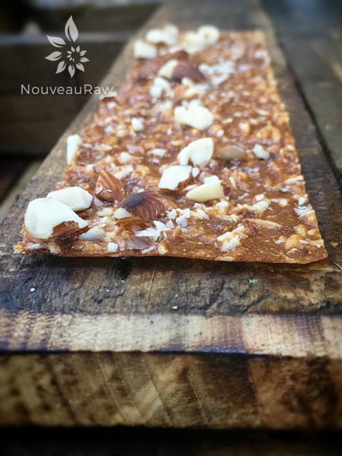
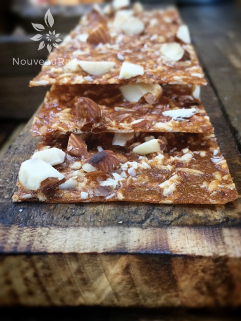

Tarragon Whispered Sweet Almond Apricot Fruit Leather

~ raw, vegan, gluten-free ~
Apricots and tarragon easily cross the borders between sweet and savory dishes. Tarragon contains notes of citrus and anise, both of which blend well with apricots.
Be sure to use ripe apricots when making the leather, the sweetness offsets their mouth-puckering tanginess and adds significant complexity to the recipe. That tangy flavor allows apricots to mix equally well into sweet or savory dishes, that is what brought me to using tarragon.
Tarragon is a relatively new spice for me. It wasn’t too long ago that I was deathly afraid of the spice drawer.
Salt, pepper, and cinnamon… those were my go-to spices. And to be frank about it, some spices still make me weak in the knees when I pass them in the grocery aisle.
I am a work in progress, and I can see that I am growing bolder and bolder with each new experience in the kitchen. I hope you don’t mind if I take a few minutes to share some of the interesting facts that I have learned about tarragon. Perhaps you too have spice phobias, and if so, I offer you my hand and we shall overcome this together!
Tarragon ~
- It is also referred to as Dragon Wart, and for a split second I contemplated using it in the title, but then I realized that it probably didn’t sound too appetizing.
- When tarragon is dried, the oils dissipate. Thus, fresh tarragon has a much more intense flavor than dried and should be used sparingly.
- To retain the most flavor of fresh tarragon during storage, freeze whole sprigs in an airtight baggie for 3 to 5 months. No need to defrost before using.
- Dried tarragon should be kept in a sealed container in a cool, dark place and used within one year.
- Heat greatly intensifies the flavor of tarragon, both fresh and dried.
- Tarragon vinegar is easy to make. Put fresh tarragon sprigs into a sterilized bottle of distilled white vinegar. Taste after a few days. Continue steeping until it suits your taste. Once desired strength is achieved, remove the sprigs.
- Tarragon is also an excellent herb to use in infused oils.
- If you run out of tarragon, you can substitute chervil or a dash of fennel seed or anise seed in a pinch, but the flavor will not be as intended.
- 1/2 ounce fresh tarragon = 1/3 cup.
- 1 Tablespoon fresh tarragon = 1 teaspoon dried.
- The herb is a very rich source of vitamins such as vitamin-C, vitamin-A as well as the B-complex group of vitamins such as folates, pyridoxine, niacin, riboflavin, etc. that function as antioxidant as well as co-factors in metabolism.
- Tarragon is notably excellent source of minerals like calcium, manganese, iron, magnesium, copper, potassium and zinc.
- Tarragon herb has been used in traditional medicines for stimulating the appetite and as a remedy for anorexia, dyspepsia, flatulence and hiccups.
- The essential oil, eugenol in the herb has been in therapeutic use in dentistry as a local anesthetic and antiseptic for toothache complaints.
- Tarragon tea is used to help cure insomnia.
If you make this recipe, please let me know your take on it. I found the flavor profile very complex and interesting. Interesting in a good way… I found a new spice that I like!
- 5 cups sliced apricots
- 2 Tbsp chia seeds, ground in spice grinder
- 1 Tbsp maple syrup
- 1/4-1/2 tsp ground tarragon (start small)
- 1 pinch Himalayan pink salt
- 1/2 cup raw almonds, chopped
- 1/4 cup shredded dried coconut
Preparation:
- Select RIPE or slightly overripe apricots that have reached a peak in color, texture, and flavor.
- Prepare the apricots; wash, dry, and remove stones
- Puree the apricots, ground chia, and tarragon, in the blender or food processor until smooth. Taste and sweeten if needed. Keep in mind that flavors will intensify as they dehydrate. When adding a sweetener do so 1 tbsp at a time, and reblend, tasting until it is at the desired taste. It is best to use a liquid type sweetener. Don’t use a granulated sugar because it tends to change the texture.
- Allow the puree to sit for 10 minutes, so the chia has time to thicken the puree.
- Spread the fruit puree on teflex sheets that come with your dehydrator. Pour the puree to create an even depth of 1/8 to 1/4 inch. If you don’t have teflex sheets for the trays, you can line your trays with plastic wrap or parchment paper. Do not use wax paper or aluminum foil.
- Lightly coat the food dehydrator plastic sheets or wrap with a cooking spray, I use coconut oil that comes in a spray.
- When spreading the puree on the liner, allow about an inch of space between the mixture and the outside edge. The fruit leather mixture will spread out as it dries, so it needs a little room to allow for this expansion.
- Be sure to spread the puree evenly on your drying tray. When spreading the puree mixture, try tilting and shaking the tray to help it distribute more evenly. Also, it is a good idea to rotate your trays throughout the drying period. This will help assure that the leathers dry evenly.
- Sprinkle the chopped almonds and coconut on top.

Dehydrate the fruit leather at 145 degrees (F) for 1 hour, reduce temp to 115 degrees (F) and continue drying for about 16 (+/-) hours. Flip the leather over about half way through, remove the teflex sheet and continue drying on the mesh sheet. Finished consistency should be pliable and easy to roll.
- Check for dark spots on top of the fruit leather. If dark spots can be seen it is a sign that it is not completely dry.
- Press down on the fruit leather with a finger. If no indentation is visible or if it is no longer tacky to the touch, the fruit leather is dry and can be removed from the dehydrator.
- Peel the leather from the dehydrator trays or parchment paper. If it peels away easily and holds its shape after peeling, it is dry. If it is still sticking or loses its shape after peeling, it needs further drying.
- Under-dried fruit leather will not keep; it will mold. Over-dried fruit leather will become hard and crack, although it will still be edible and will keep for a long time
- Storage: to store the finished fruit leather…
- Allow the leather to cool before wrapping up to avoid moisture from forming, thus giving it a breeding ground for molds.
- Roll them up and wrap tightly with plastic wrap. Click (here) to see photos on how I wrap them.
- Place in an air-tight container, and store in a dry, dark place. (Light will cause the fruit leather to discolor.)
- The fruit leather will keep at room temperature for one month, or in a freezer for up to one year.
Culinary Explanations:
- Why do I start the dehydrator at 145 degrees (F)? Click (here) to learn the reason behind this.
- When working with fresh ingredients, it is important to taste test as you build a recipe. Learn why (here).
- Don’t own a dehydrator? Learn how to use your oven (here). I do however truly believe that it is a worthwhile investment. Click (here) to learn what I use.

© AmieSue.com